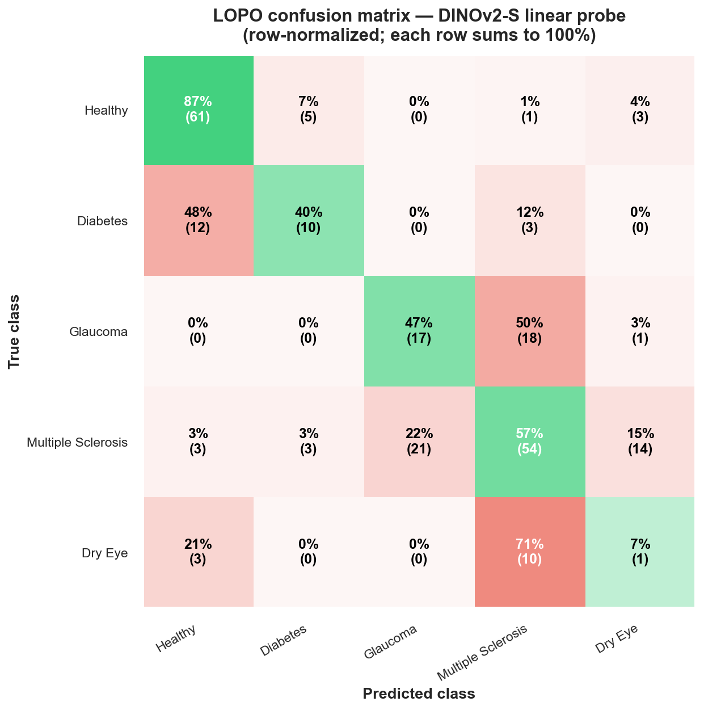

Reading hidden disease signatures from the fractal crystals of dried tear droplets — through multi-agent LLM orchestration.
An orchestrator dispatches specialist sub-agents: researcher, implementer, red-team, synthesizer. We brainstormed strategy with the orchestrator the way a PI works with postdocs — all in a single 18-hour session.
Leave-One-Patient-Out cross-validation. 35 patients, one held out at a time. The model predicts that patient's scans without ever having seen them. 240 scans → 240 honest predictions.
Meta · 142M images · self-supervised. Universal visual encoder.
Microsoft · 15M PubMed images · medical prior orthogonal to DINOv2.
90 nm sees the whole fractal · 45 nm sees fine crystal edges.
240 scans is too few to fine-tune. LoRA tested → −4 pp F1.

He pointed to asynchronous multi-agent parallelism as the next step. We took the step.
Fortune · 03 / 2026First multi-agent ecosystem, not just a loop. Discoveries transferred across model families.
arXiv:2503.18102Frozen backbone + agentic loop as a data multiplier. The closest published analogue to this work.
arXiv:2509.20279